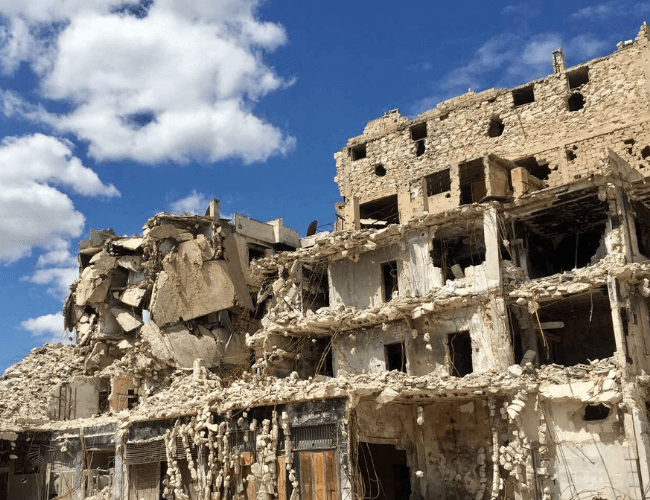

La guerra en Siria
El conflicto bélico en Siria parece no tener fin tras 10 años de enfrentamiento.
Por: Tomás Aronna San Martín
La guerra en Siria empezó en 2011 como un conflicto civil, impulsado por las revoluciones en Túnez, Libia y Egipto, proceso que fue denominado “Primera Guerra Árabe”, o también conocido como la “Primavera Árabe”. En el país luchaba el régimen del partido Baath, liderado por el presidente, Bashar Al Assad, contra grupos opositores y rebeldes que formaron el Ejército Sirio Libre (ESL). En un principio, este conflicto generó aliados en países vecinos y en grupos terroristas islámicos, pero luego pasó a tener interés a nivel mundial, con la participación de las principales potencias del mundo, Rusia y Estados Unidos.
Para Antonio Pampliega, periodista español especializado en zonas de guerra, el papel de Israel en este conflicto bélico es muy importante, porque Siria tiene frontera con este país, además si quitan a Al Assad del gobierno “no tienen a quien poner”. “A mí los sirios rebeldes me dijeron que el día que terminen con el presidente sirio, van a reconquistar Palestina. Los israelíes no van a apoyar a unos rebeldes que pueden poner en riesgo a su país”, expresó recientemente en conferencia de prensa brindada.
En cambio, Shadi Lamia, primer secretario de la embajada siria en Argentina, dijo: “Lo que hace el Estado Israelí es ilegal, porque ocupa territorios palestinos que no les corresponden”. Además, destacó que siempre van a “apoyar” a Palestina.
Por otra parte, Pampliega también detalló el interés de dos de las principales potencias del mundo en esta guerra, Rusia y Estados Unidos. El país presidido por Vladimir Putin, tiene dos motivos, el primero porque tiene una base en Tartus y no quiere que se la dejen al gobierno norteamericano. El segundo, para probar armas y después poder venderlas a precios africanos, porque al ser utilizadas en combate le da más valor. En cuanto a la primera potencia mundial, el periodista dijo no saber si fundaron o financian al Estado Islámico, pero sí son los responsables de que exista, porque se crearon en 2003, cuando ellos invadieron Irak. Sobre la corrupción mutua entre ambas potencias, el analista en política internacional, Jorge Castro, explicó: “El papel que juega la ONU por fuera del país como mediador ente Rusia y Estados Unidos es clave”.
Para Lamia, Estados Unidos debe respetar a Siria como un país independiente. “Barack Obama mandó muchas armas a los terroristas para que acaben con Al Assad, ya que Siria es muy importante para el tránsito de gas y petróleo en Medio Oriente”, dijo el primer secretario. Agregó que esto sucede porque los norteamericanos no quieren estados independientes en la zona.
En cambio, destacó que la relación con Rusia es “muy buena” desde los inicios del cristianismo, por esto, Siria le pidió ayuda al gobierno ruso para combatir con los terroristas, porque ningún ejército puede aguantar una guerra contra 2 mil grupos armados conformados por gente de más de 100 nacionalidades diferentes.
En los conflictos bélicos los medios cumplen un rol fundamental y riesgoso, informan las consecuencias y los hechos que las partes involucradas no quieren que se sepa. Pampliega, que cubrió la zona de conflicto, detalló que esta guerra en particular es muy peligrosa, entonces los medios decidieron no mandar corresponsales. Agregó que es la guerra del siglo 21 que más periodistas han sido secuestrados o asesinados, porque la prensa está siendo “prescindible” en zonas de combate debido a los avances tecnológicos, como los videos o internet. El periodista español también añadió que ingresó al país sirio de manera “ilegal”, del lado de los rebeldes, porque el régimen de Al Assad impide a la prensa entrar, sino es con un “visado”.
Lamia negó esto y explicó que muchos periodistas pueden ingresar de manera legal a Siria sin romper las leyes del país. Por otra parte, expresó que los medios reflejan “muy mal” la guerra, ya que adoptan la posición del gobierno de sus respectivos países en base a este conflicto.
En cuanto a la solución de este conflicto, Pampliega expresó: “No hay solución al conflicto. Se habla del partimiento de Siria, rebeldes, kurdos, Al Qaeda y el Estado Islámico, pero, ¿quién negocia con estos últimos?”. Contrariamente a esto, el primer secretario dijo: “La solución es bastante simple, que Estados Unidos y sus aliados (Arabia Saudita, Turquía, Qatar e Israel), dejen de apoyar y enviar grupos terroristas y respeten el Estado Sirio”. También agregó que si Donald Trump cumple con sus promesas de campaña electoral y “deja de vender armas a los terroristas, la guerra podría terminar en un plazo muy corto”.
Por otro lado, Castro explicó: “No se puede saber con certeza cuando finalizará la guerra. Lo que sí se sabe es que, para cumplir el objetivo de terminar con el derrame de sangre de millones de refugiados, Estados Unidos y Rusia deben tomar acción común. Ahí es donde debe tomar cartas la ONU”.